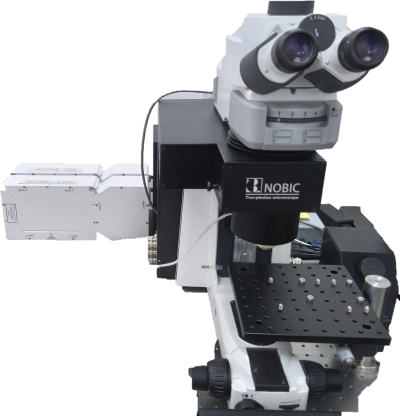

A custom upright 2-photon
microscope with two laser lines for fast 2-photon excited fluorescence
imaging.

Available
techniques:
- fast 2-photon excited florescence imaging (using a resonant scanner)
- second harmonic generation (SHG) imaging
Objectives:
- XLPLN25XWMP2 25x/1.05 water, FWD 2 mm, CG 0 - 0.23 mm, brain sample
index mismatch correction collar
[FWD = free working distance, CG = cover glass]
Fluorescence
excitation sources:
SPARK Alcor Duo (920 nm and 1064 nm) fs-laser
Emission
filters:
- Detector 1: 520/70
- Detector 2: 593/46
Detectors and
cameras:
2x GaAsP photomultiplier tube (Hamamatsu)
Software:
Other features:
- Resonant scanner for fast imaging
- Piezo focus drive
- Manual stage
| Usage fees [SGD/hour] |
LKCMed |
NTU |
Academia |
Industry |
| 20* |
35 |
60 |
96 |
| Location |
CSB level 12, Support room 8 |
| Safety Notice |
Requires N3 laser license |
| Contact |
nobic.facilities@e.ntu.edu.sg |
*Reduced rates apply:
- off-peak hours (weekends, public holidays and 18.00
- 8.30 on weekdays): 70% of the rate stated in the
table
- 30% of the prevailing rate applicable after
10 hours of booking/usage
- 30% of the prevailing rate (that is already the
discounted rate in this case) applicable after 24 hours
of booking/usage.
BACK TO TOP